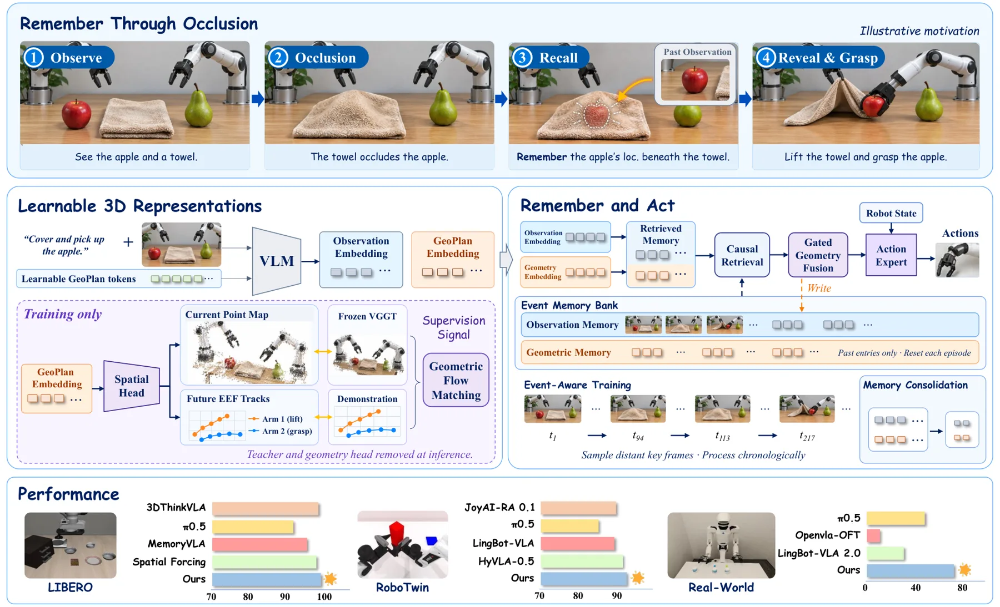
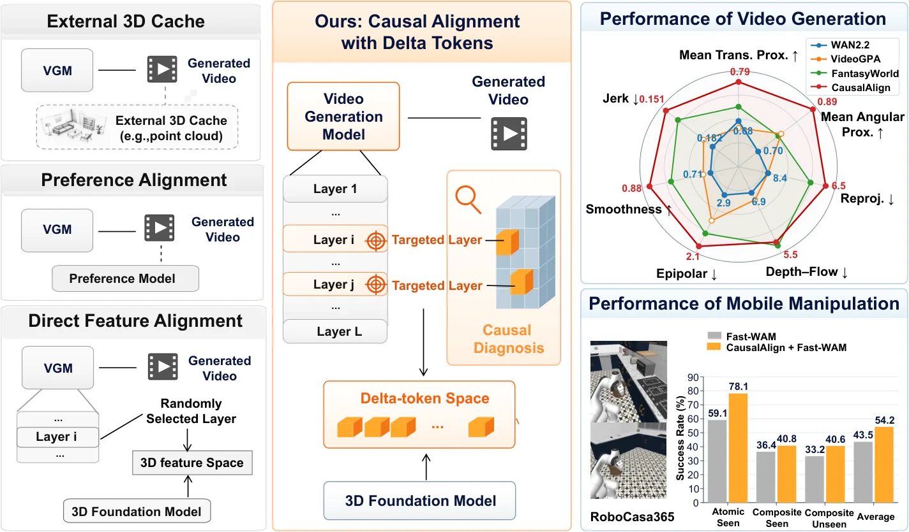
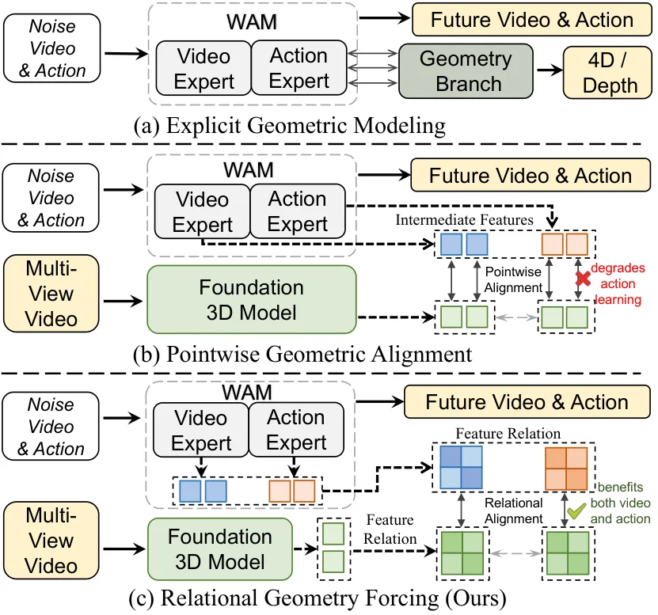
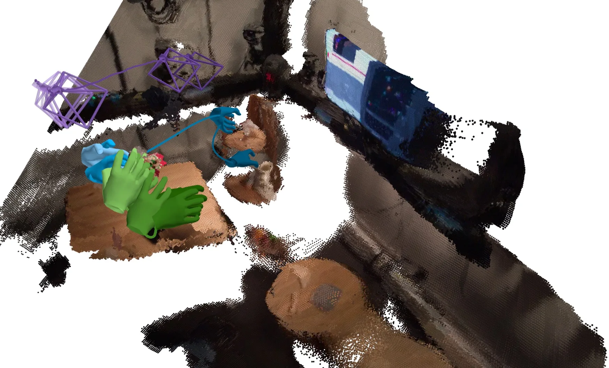

新论文 · 日期 2026-10-21 · score 12 · S层 · Geometry Foundation Models / 3D Foundation Models · cs.CV
内容级别：完整单篇海报
作者：Qinfan Zhang, Yifan Luo, Haoyuan Shi, Guanlin Liu
评分 12/10
VLA3D 几何监督GeoPlan token情节记忆VGGTflow matchingLIBERORoboTwin 2.0真机操作
一句话工作总结：把 VGGT 的点图与演示得到的未来末端轨迹当作监督信号，蒸进 K 个可学的 GeoPlan token；token 与两条观测流一起进入带容量上限的情节记忆，靠相似相邻合并保留事件帧。推理时教师、重建头全部移除，只做记忆检索与门控融合，因此在遮挡后仍能靠历史几何定位目标。LIBERO 98.9%、RoboTwin 91.17% 平均，真机五任务 78.0%；去掉几何分支 L…
几何结构直接描述 3D 世界，是机器人操作与世界理解的基础。多数 VLA 模型只依赖当前观测的 2D 表示，而几何感知方法往往需要额外的 3D 信息；更关键的是，这些通常逐帧独立推断出的几何信息被丢弃，没有累积成持续的任务表征。作者的判断是：动作生成需要的是一份紧凑、任务相关、可随时间更新的几何抽象，而不是每一步都完整的可渲染 3D 重建。基于此提出 GeoMem-VLA：把显式 3D 监督内化进专门的几何 tok…
Geometric structure is essential for robotic manipulation and understanding the 3D world. Most VLA models rely on 2D representations of current observations, while geometry-aware approaches often require addit…

新论文 · 日期 2026-10-21 · score 10 · S层 · Geometry Foundation Models / 3D Foundation Models · cs.CV
内容级别：完整单篇海报
作者：Kai Zhu, Yintianrun Zhang, Shuwei Jiang, Ruolin Zuo
评分 10/10
视频生成相机自运动几何状态遗忘因果干预线性探针delta tokenLingBot-MapLoRAworld action modelRoboCasa365
一句话工作总结：把“自运动信息在去噪后段被丢掉”这件事先量化：线性探针测可解码性、四种干预（Mask/Shuffle/Replace/Inject）测因果效应，两条曲线都是先升后降。然后在衰减最快的层（10/12/14/20，主目标 14）与时间步（398/799）上，用 LingBot-Map 的 128 维结构化 delta token 做三阶段对齐（教师 token → 投影器 → L…
扩散视频生成模型能产出视觉上合理的视频，但相机自运动在长时程上会漂移；相机自运动决定帧间视角如何变化，是保持几何与轨迹一致的关键。作者提出 CausalAlign，包含两部分：先用线性探针与因果干预诊断精确自运动在 VGM 中如何被表示、使用与保留，发现去噪过程中呈“先升后降”的模式；再把被识别层上的表征通过 delta-token 空间对齐到一个 3D 基础模型——该空间编码相邻帧之间的变化，使对齐聚焦于自运动动…
Diffusion-based video generation models (VGMs) can produce visually plausible videos, yet their camera ego-motion often drifts over long horizons. Camera ego-motion determines how the viewpoint changes between…

新论文 · 日期 2026-10-21 · score 10 · S层 · Geometry Foundation Models / 3D Foundation Models · cs.RO
内容级别：完整单篇海报
作者：Yuan Xu, Yixiang Chen, Qisen Ma, Jiabing Yang
评分 10/10
World Action Model几何先验表征对齐关系蒸馏VGGTFast-WAMLIBERORoboTwin 2.0真机 Franka跨视角对应
一句话工作总结：作者的观察很具体：把 VGGT 稠密特征点级回归到动作专家，会让三个 WAM 变体的成功率都跌破无对齐基线（97.90→97.55、98.75→98.35、98.40→97.95）。于是改成只对齐余弦相似度矩阵：帧内、跨视角、动作-时间三个关系项，用 Huber 损失匹配冻结 VGGT 诱导的关系。LIBERO 平均 98.65（Fast-WAM 97.60），RoboTwi…
World Action Models 通过联合学习视觉动态与可执行动作，在机器人操作上表现突出，但它们的视频与动作目标都没有显式约束精确操作所需的 3D 几何。近期几何感知 WAM 引入深度或 4D 预测分支，或用预训练 3D 基础模型监督 WAM 的中间特征；作者发现，这种点级对齐有利于视频特征，却会损害动作学习，因为稠密几何特征目标过度限制了紧凑的动作特征。为此提出 Relational Geometry F…
World Action Models (WAMs) have shown strong potential for robot manipulation by jointly learning visual dynamics and executable actions. However, their video and action objectives do not explicitly constrain…

新论文 · 日期 2026-10-22 · score 6 · cs.CV
内容级别：简报式摘要
作者：Naru Suzuki, Satoshi Ikehata, Takehiko Ohkawa, Yoichi Sato
评分 6/10
第一人称视觉手部重建米制尺度VGGT-Ωflow matching相机轨迹零样本迁移
一句话工作总结：把“手部估计 + 相机估计 + 尺度恢复”三件事塞进一个单阶段模型：用 VGGT-Ω 的场景几何特征提供米制尺度线索，手部专用特征保留关节细节，再用 flow matching 做条件运动生成以覆盖遮挡/出画的多解。HOT3D 世界系误差 28.4 mm（StableHand 32.9），ARCTIC 36.2 mm（76.2），两步采样即可。
从第一人称视频恢复米制世界系的手部运动，有助于理解人类交互并迁移到具身智能体。这条任务有三个难点：多阶段流水线会把独立估计的手部与相机误差逐级放大；单目观测本身缺少物理尺度；遮挡与出画的手部存在多条合理轨迹。作者提出 DewHand，一个在共享世界坐标系中单阶段联合预测手部与相机运动的统一模型。为解决米制尺度歧义，它把 VGGT-Ω 的场景级几何特征与米制空间监督结合，同时用手部专用特征保留细粒度关节；为处理遮挡与…
Recovering metric world-space hand motion from egocentric video supports understanding human interactions and transferring them to embodied agents. Three challenges complicate this task: multi-stage pipelines…